Part 1 · Market Landscape
A store of 3.45 million apps, and a handful of categories that run it
The 2022 catalogue counts 3,451,063 apps spread across 48 categories — but the distribution is nowhere close to even. Education alone carries 386,518 apps, and the top handful of categories (Education, Entertainment, Music & Audio, Business, Tools) absorb a disproportionate share of everything ever published.
Raw app counts include everyone, including publishers that were never real competition to begin with. In Travel & Local, big tech and pre-installed publishers alone account for 79% of all installs — one or two players with an unfair structural head start, not a crowded market.
The chart below shows the full, unfiltered store by default — every publisher, nothing held back — plotted on three axes at once: how many apps are fighting for attention (x-axis), how much demand exists per app (y-axis, log scale), and how concentrated that demand is in the hands of the top 3 apps (bubble size). Click "Indie developers only" in the legend to swap in the big-tech-excluded view — the same chart, the same axes, filtered to the competition an independent developer can actually contest. Every chart later in this report that talks about 'competition' or 'opportunity' offers the same toggle.
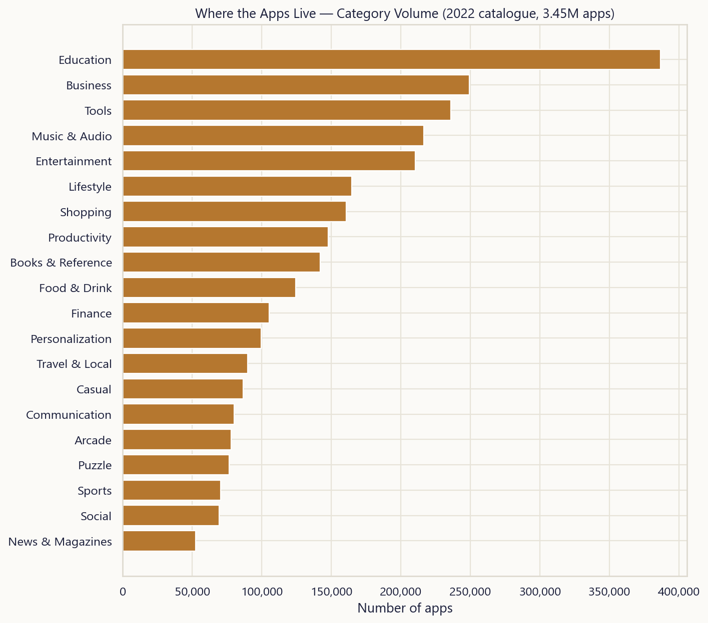
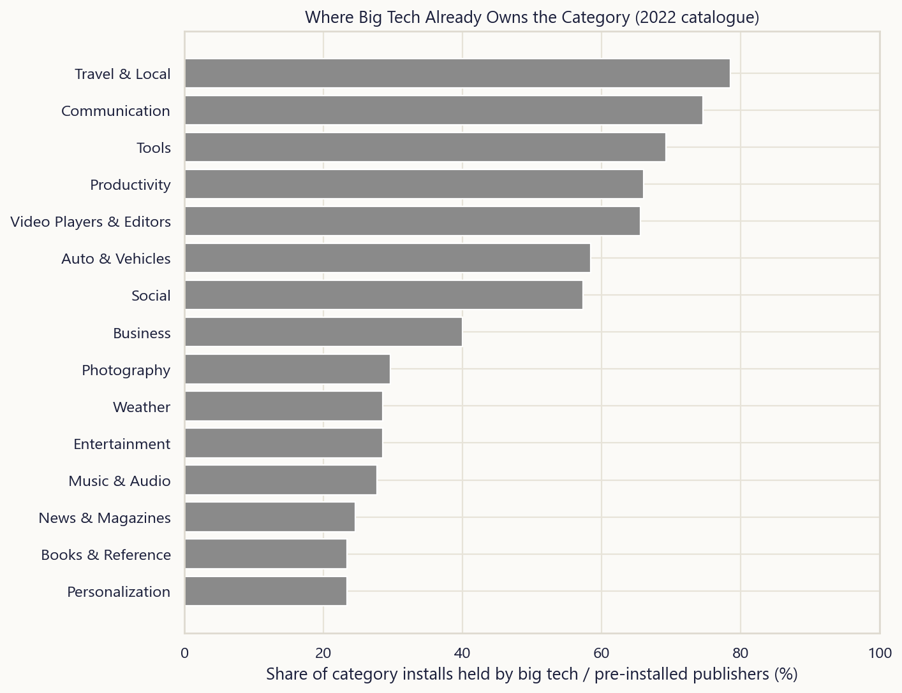
Part 1 · Market Landscape
Four years on: Finance is eating share, Music & Audio is shrinking
Comparing each category's share of indie listings in 2022 against its share of the fresh 2026 scrape isolates where independent publishing activity is actually moving, independent of the size difference between the two datasets. This one is indie-only by design rather than by default — a pre-installed giant relisting an app doesn't reflect 'momentum' in any meaningful sense, so including it would just be noise.
Finance gained the most relative share among indie developers, while Music & Audio lost the most — a signal worth cross-checking against the monetization and freshness sections later in this report before drawing conclusions.
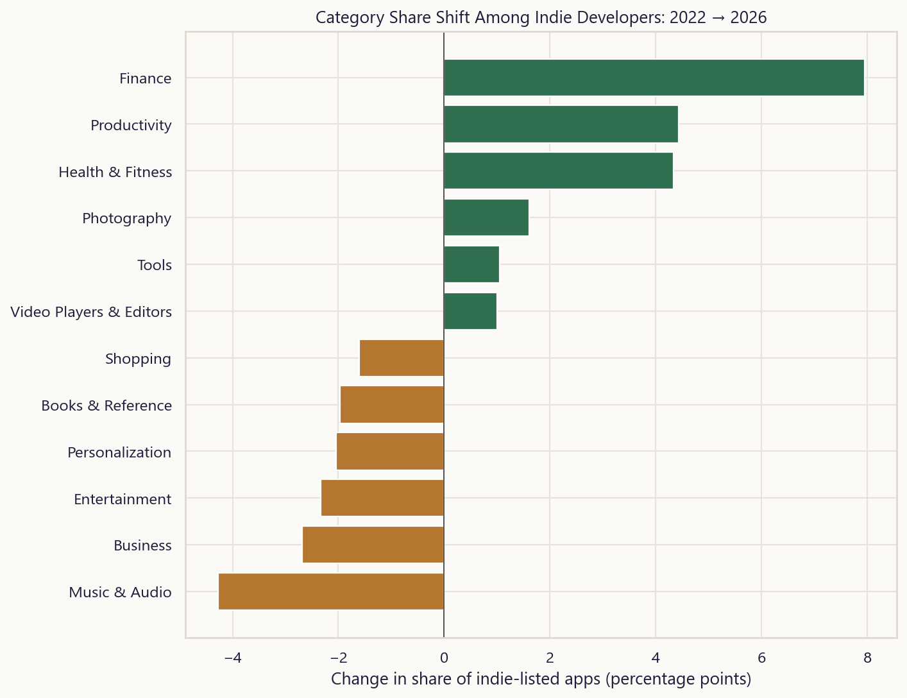
Part 2 · Four Years Later
The store didn't just grow — the business model changed underneath it
Average star rating has risen from 0.52 in the 2022 catalogue to 3.80 in the 2026 scrape. That's not necessarily a quality story on its own — a fresh scrape of currently-live, currently-ranking apps is biased toward survivors, while the 2022 archive still carries every app that was ever listed, including the abandoned and the mediocre. Read it as 'what's actually competitive on the store today' rather than 'apps got better.'
The monetization mix tells a cleaner story: advertising and in-app purchases are more prevalent in the current live catalogue than they were across the full 2022 archive, consistent with a broader industry shift away from pure paid-app models over the last several years.
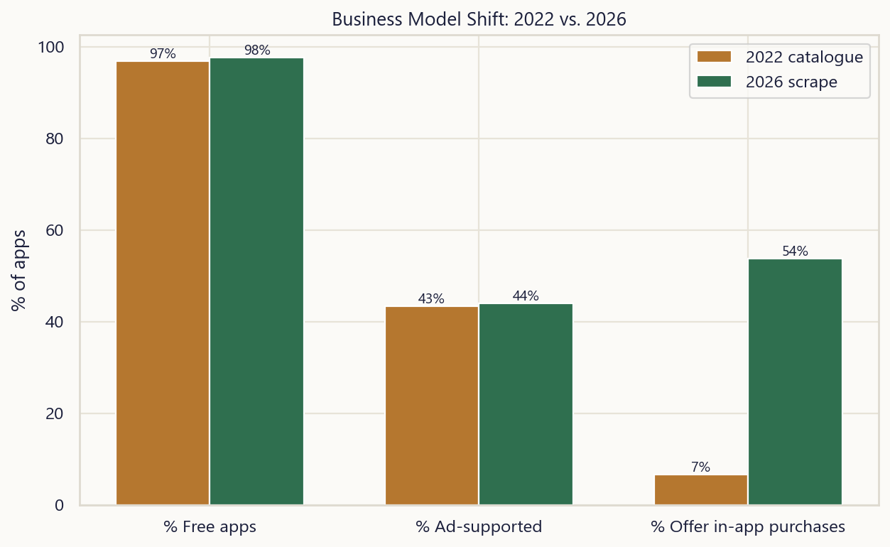
Part 3 · Meet the Market
11,176 real apps, not a category average
Every chart so far in this report aggregates up to the category level. This one doesn't — it's every single app in the live 2026 scrape, one dot each, positioned by how many people installed it and how it's currently rated. Nothing is text-labeled on the chart itself; hover any dot to see the real app name, its developer, and its category. That trade — no static labels — is what makes it possible to look at all 11,176 apps at once instead of a top-20 list.
The amber diamonds are big tech and pre-installed publishers — Google, Meta, Samsung, Microsoft, and similar — flagged separately because they aren't real competition for a new developer; they ship on the phone before day one, or ride a billion-user platform most indie developers will never have access to. They're only 2.0% of the apps in this catalogue but 64% of all installs — which is exactly why they're excluded from every competition and opportunity metric elsewhere in this report (market landscape, developer concentration, and the closing opportunity table). Follow the green dots; that's the market an indie developer is actually competing in.
Part 4 · Ratings & Quality
Reach and quality are two different games
Plotting every app's rating count against its star score shows almost no correlation — apps with a handful of reviews are just as likely to sit at 4.5 stars as apps with millions of them. Star rating is not a proxy for scale; it's closer to a proxy for how well an app satisfies the narrow audience that bothered to review it.
At the category level the spread is real: Word averages 4.49★ across 73 apps, while Beauty trails at 2.81★. Categories that skew utility-first and low-friction (reference tools, simple productivity) tend to out-rate categories where user expectations are harder to meet consistently (entertainment, social, anything ad-heavy).
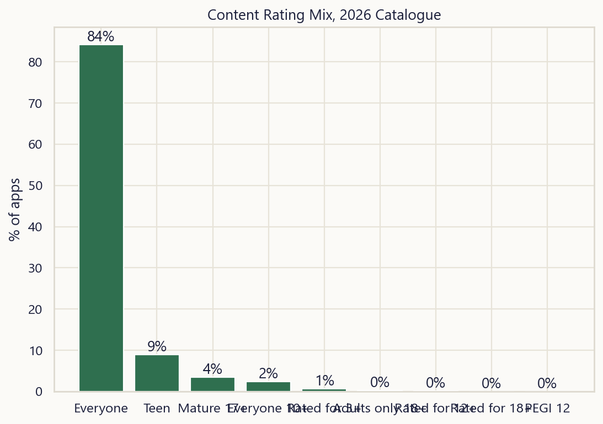
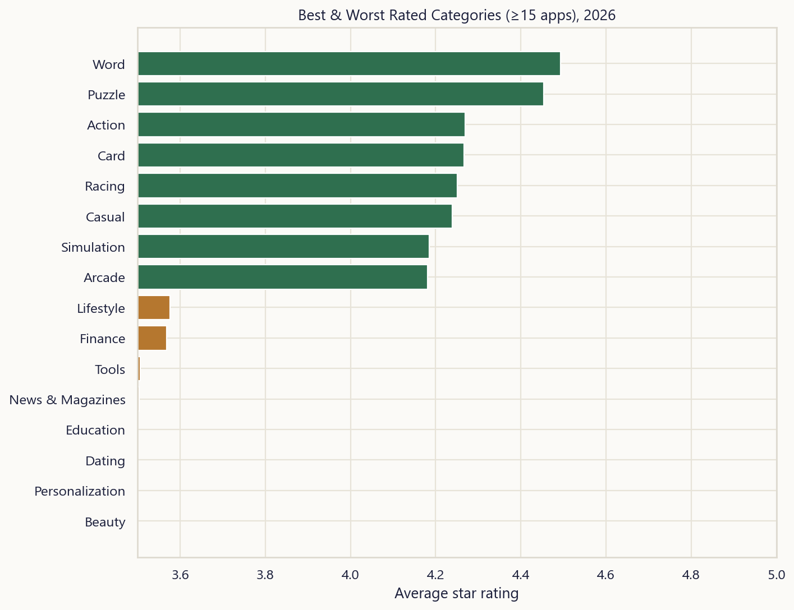
Part 5 · Monetization
Paid apps are a rounding error; hybrid ads-plus-IAP is the default
Only 2.3% of apps in the 2026 catalogue charge an upfront price, down from 3.1% in 2022. The dominant model today is a hybrid of advertising and in-app purchases — 29% of apps in the current scrape run both simultaneously, monetizing free users through ads while reserving IAP for the smaller cohort willing to pay for removal of friction or unlocks.
The mix isn't uniform across categories, though. Utility categories skew toward ad-only or IAP-only, while games and entertainment lean hard into the hybrid model — makes sense, since games have both the engagement to sustain ad breaks and content worth selling.
Of the shrinking pool of apps that still charge upfront, the median price has held roughly steady, suggesting the paid-app segment that remains is a stable, deliberate niche (professional tools, specialist utilities) rather than a dying model still finding its floor.
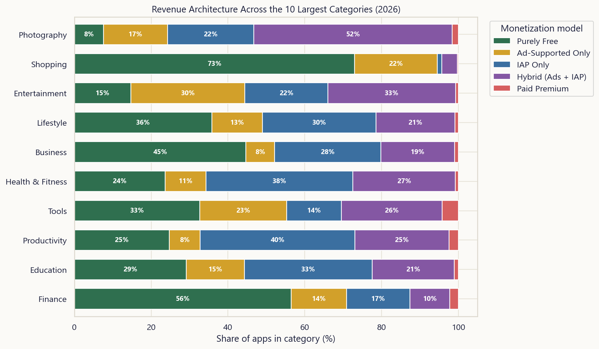
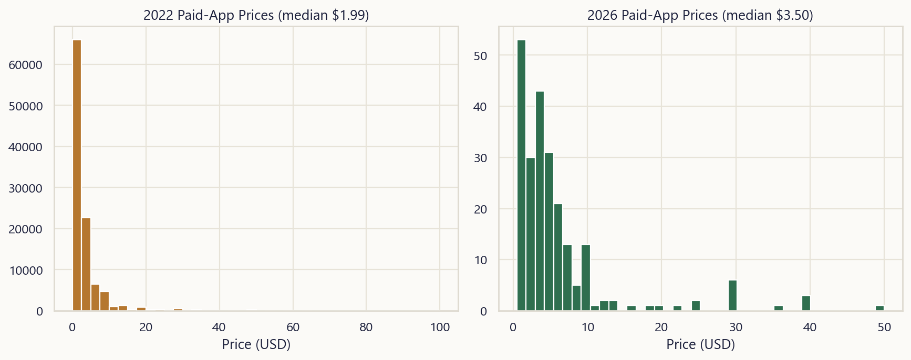
Part 6 · Developer Landscape
Big tech holds 64% of 2026 installs — and even without them, it's still winner-take-most
Big tech and pre-installed publishers hold 64% of all 2026 installs (38% in the 2022 archive) despite being a sliver of the developer count. Both charts below default to the full, unfiltered picture — everyone included — with an indie-only view one click away, so you can see exactly how much of that inequality is 'Google exists' versus a genuine indie winner-take-most dynamic.
Strip big tech out and the inequality barely moves: a Gini coefficient of 0.99 in 2022 and 0.92 in 2026 among indie developers alone (versus 0.99 / 0.97 with everyone included; 1.0 would mean one developer owns every install). The top 1% of indie developers by portfolio account for roughly 87% of indie installs in the archive and 46% in the fresh scrape — this is a real indie phenomenon, not just a big-tech artifact.
Most developers aren't trying to be the top 1%, either way: 63% of indie developers in the 2022 archive (and 86% in 2026) have shipped exactly one app. The realistic comparison for a new developer isn't 'the market average' — it's the long tail of other single-app indie publishers, most of whom never break out of low install counts regardless of category.
Part 7 · Freshness & Momentum
Publishing peaked years ago — but the survivors are actively maintained
App publishing volume in the archive peaked around 2021 before tapering off in the most recent cohorts — partly a real slowdown, partly an artifact of a dataset frozen at a point in time (very recent apps hadn't yet accumulated the ratings history that makes them show up cleanly in aggregate stats).
Among apps live on the store today, 72% were updated within the last 90 days, while 7% haven't been touched in over a year. Update recency is one of the more honest signals in this dataset: an app that's still shipping updates is, at minimum, still being actively operated by someone with a reason to keep it alive — a reasonable proxy for 'this niche still has commercial upside.'
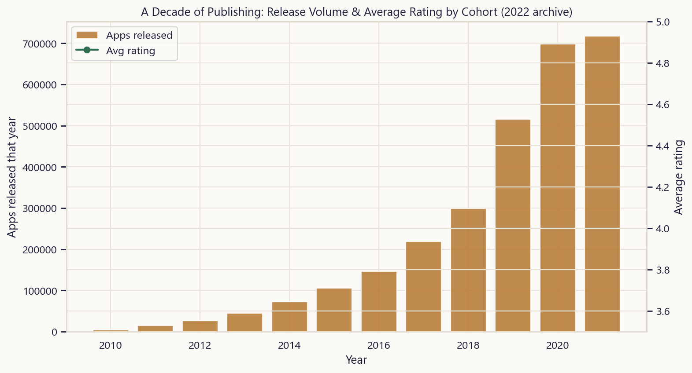
Part 8 · Geography & Discoverability
United States rates apps kindest, Japan rates them harshest — and the charts have favorites
The 2026 scrape tracked the same set of apps across ten country storefronts, which makes it possible to isolate a pure localization effect: identical apps, identical functionality, different regional audiences. United States users rate apps most generously on average, while Japan users are the toughest graders — a gap worth remembering before treating any single-region rating as a universal quality signal.
Travel And Local shows up most often across the curated top-grossing and top-selling charts we tracked, meaning it gets outsized editorial placement independent of the raw app count in the category — real estate that's worth more than category size alone suggests.
Keyword search results tell a discoverability story of their own: broad terms return hundreds of competing apps and bury any one result deep in the list, while narrow, intent-specific terms — things like llm inference, exam prep, health tips hindi — surface a much smaller, less contested set of results. That gap between broad and narrow keywords is exactly where an app store optimization strategy earns its keep.
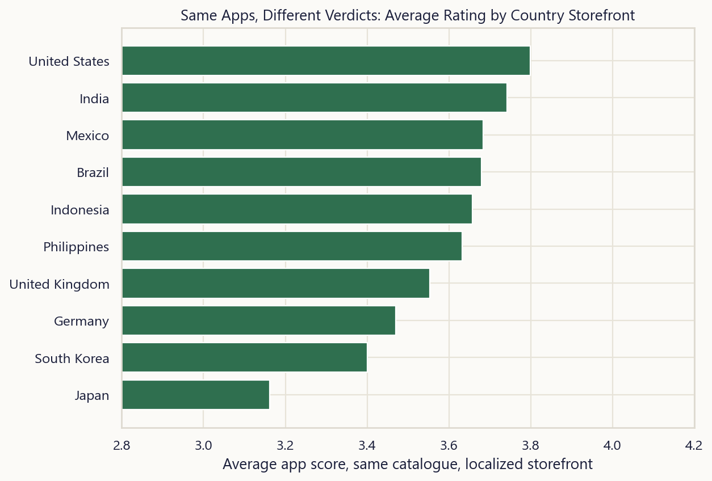
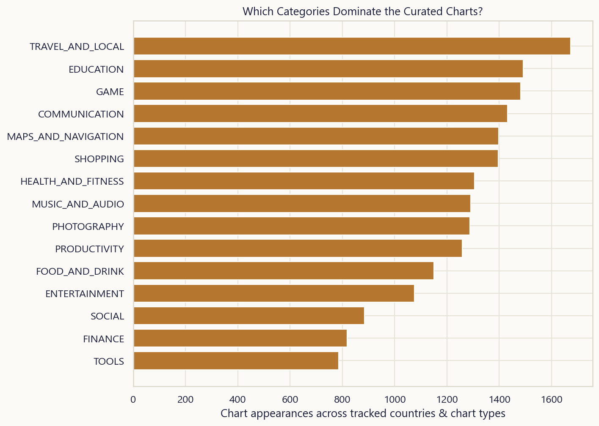
Part 9 · Opportunity Synthesis
Where the numbers point, if you were shipping a new app this quarter
Pulling every signal from this report into one score — competition density, demand per app, how monopolized the category is by its top 3 players, and how high the quality bar sits — surfaces a shortlist rather than a single answer. No category is a guaranteed win; this ranks where the structural conditions (crowding, concentration, demand) are most favorable, independent of whether you personally have the right idea or team for it. Big tech is excluded here for the same reason argued earlier in this report — checked against the full, unfiltered catalogue, the top of this ranking barely moves either way, which is itself a useful sanity check: these categories are genuinely indie-friendly, not just 'friendly because Google isn't in it.'
Racing and Dating top the list: enough proven demand to know people download in this space, without the extreme crowding or top-3 monopoly that defines categories like Games or Communication. That's a starting point for due diligence, not a substitute for it — go read the actual top apps in these categories before committing.
| Category | Apps | Median installs | Avg rating | Top-3 share | Opportunity score |
|---|---|---|---|---|---|
| Racing | 49 | 50,000,000 | 4.25 | 40% | 74 |
| Dating | 55 | 5,000,000 | 3.44 | 53% | 69 |
| Arcade | 75 | 10,000,000 | 4.18 | 25% | 69 |
| Word | 72 | 10,000,000 | 4.50 | 28% | 66 |
| Communication | 114 | 5,000,000 | 3.82 | 27% | 66 |
| Maps & Navigation | 145 | 5,000,000 | 3.67 | 28% | 65 |
| Card | 104 | 5,000,000 | 4.27 | 25% | 63 |
| Simulation | 171 | 5,000,000 | 4.18 | 10% | 63 |
| Action | 153 | 10,000,000 | 4.27 | 26% | 62 |
| Travel & Local | 246 | 5,000,000 | 3.78 | 22% | 60 |